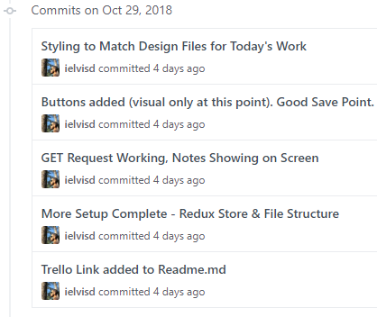
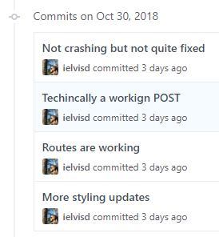
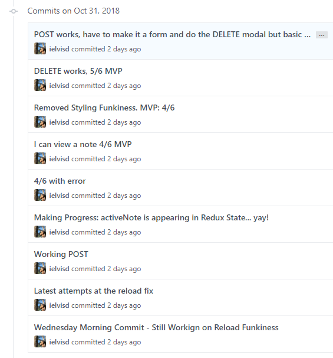
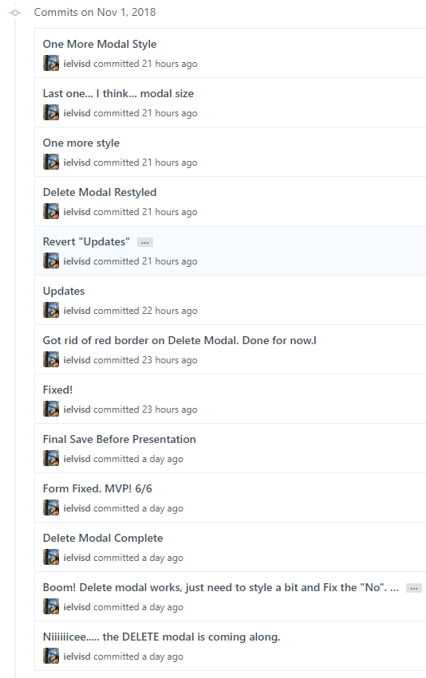

Writing this blog is has been a great way for me to either prepare for a sprint (I'll start writing Wednesday or Thursday) or review what I've just learned (I'll start writing Thursday or Friday). This week was the latter, and I definitely needed it. We started the back-end portion of the curriculum which means we started to learn about what happens on the server side of the client-server relationship. It was a bit like learning how a magician does his tricks. For our sprint this week we built an API (Application Programming Interface) that performs CRUD (CREATE, READ, UPDATE, DELETE) operations on a pre-built data access layer.
Day 1: Introduction to Node.js and Express
Monday was another fresh start as we started to dive into the back-end portion of the curriculum. It's never a dull day at LambdaSchool. We met our third instructor and started to get into new material right away. We began to learn how to use Node.js as a platform to write server code that can communicate with clients (other computers) using JavaScript. On top of that we brought in Express which is a web application framework atop Node.js that lets us add routing and middleware. A lot to digest for one day but our instructor was really patient and gave us great code-along demos. We started a 2-day project whose day 1 objective was to successfully implement a GET request. I was feeling tired but solid on the instruction and the project by the end of the day.
Day 2: Server-side Routing
In day 2 we delved deeper into Express and saw how it gave our application a way to handle different URL+HTTP method combinations. We used it to send requests that manipulated the data on our server in different ways. We used Postman as a tool to manually test our requests which was valuable when it came time to do our projects this week. We also saw how to read data from the query string, request body and route parameters. It always seems like a mountain of content at first but the instruction and the projects help bring it all together in a digestible way. I'm lucky to be able to put in the time to do the work. That is one thing that is necessary to be successful. You have to be fully committed. That being said I was able to finish this 2 day project and whip up a quick React app to view the posts that my server was spinning up. We're moving fast.
Day 3: Express Middleware
This day focused on using middleware to extend the features that were provided by the Express framework. I enjoyed that our instructor demoed how to write custom middleware which made it easy to understand what Express was doing under the hood. We started another 2 day project which had us practicing more endpoint routing and writing our first custom middleware.
Day 4: Deployment and Good Practices
As I write this I'm impressed at how much we've covered in one week. On the fourth day of instruction we saw how to use error handling middleware, learned how to use Express Router to organize our code (which made my server file a lot cleaner and shorter) and deployed to Heroku. All in a day's work. Once again I was able to finish this 2-day project on time and wrapped it in a presentational React app to display a portion of our data. I thought the next day's Sprint would be straight forward... I probably should've studied or written this recap earlier.
Day 5: Sprint 11 - Node-Express
For the sprint this week we were tasked with creating an API that performed CRUD operations on two data sets that were pre-built for us. (Sprints are only 3 hours long). I struggled getting a 404 request to return when I wanted it to, had I learned anything at all? I was stumped. And hungry. I reached out to my project manager and let her know that I wouldn't be finishing my Sprint on time but would debug and submit after lunch. As I was eating I had my lightbulb moment! I was expecting something of my method that it couldn't do and had actually solved a similar problem earlier in the week. I got home, debugged my code and submitted my project. Mission accomplished.
After my one-on-one with my project manager I felt relieved to hear that I wasn't the only one in my cohort to have had that issue with the Sprint. I'm amazed every week at the new skills we learn. Next up, we add data persistence to our web APIs.
FSW14 Sprint 10 - Project Week: Front-End
It is Friday morning the day after we (FSW14) completed Project Week for the Front End portion of the Full
Stack Web Development Curriculum at LambdaSchool. We were tasked with building a minimum viable product (MVP)
for a note taking app in React called "Lambda Notes" for our "client", which was our instructor. This project
was really challenging but so much fun. I completed MVP early Thursday morning but didn't put the finishing
touches on the project until about half an hour to demo time. Probably the most thrilling week so far in my
time at LambdaSchool.
Day 1: Project Setup & Getting the Data
Having been through a project week already while attending LambdaSchool I was much better prepared this go
around because I kind of knew what to expect going in. The project was a to-do notes app that we had to
create using React given some design files which were just visuals for what the app should look like. We
worked on the project from Monday to Thursday at 2pm at which point some of our cohort presented to the
group and that was followed by a smaller group presentation with your project manager. I had setup my
Trello board the previous night and had an idea for what MVP looked like. The app needed to fetch notes
from a server, display them, display a single note, edit a note, and delete a post. Using Redux was a
"stretch goal" and thus not required but I felt comfortable with it from the previous week and it seemed
like a logical choice for this app, I cleared that with my Project Manager and got underway.

The above image is from my Github account and shows the "commits" or saves that I did throughout the day.
Day 1 was pretty smooth. I wanted to start easy and not overwhelm myself by trying to implement all the MVP
features at once so I focused on getting my notes to appear using a POST and doing the styling for the main
portions. I was feeling good about my progress after day 1 and was at 2/6 on the MVP list.
Day 2: Posting a Note & Reload Issues Emerge
I started to run into issues that would last up until Thursday morning when it all came together. I
focused on getting a POST request to work and was having trouble getting my page to render all the notes
after using a POST request without doing a hard reload of the site. I tried lots of different things and at
the end of the day I decided that at least it was working and that maybe if I focused on implementing some
of the other MVP features I would fix this on time. This is when I started to get a working Route
implemented which got me to look into WithRouter which solved my reload issue. Well, that and calling
another GET request after my POST request in the POST action. I started to wrap my connect with a
WithRouter function from my middleware and that moved my Router methods from the Context area of my React
tools to my Props. If that made no sense to you don't worry, I basically fixed my reload issue which gave
me confidence going into day 3. If I had a working POST method, then PUT and DELETE weren't far behind.

I was at 3/6 MVP and feeling okay about the project and the week so far. For some reason I thought we had
until Friday for this project and something clicked on this night that the project was actually due
Thursday! I still thought I could wrap MVP up by Wednesday night so I wasn't too worried.
Day 3: WithRouter Saves the Day MVP a Day Away
Wednesday was Halloween and also the the day I spent the most time with this project. It was quite spooky.
I spent most of the day coding away and by the end of the night I had gotten MVP with some quirks and
styling that didn't feel quite right. I definitely was not happy with my product that night but I had the
following day to change my simple inputs that were placeholders for a full form and get my delete modal
finished which is what I needed to feel satisfied with my project. I was feeling awesome about being able
to problem solve and make progress every single day.

Even though I was at 6/6 on the MVP list I was not complete in my head until I had a working modal and a
form with multi-line text and not just 2 inputs on a screen. 1 day to go.
Day 4: Demo Day - Lambda Notes - FSW14
The delete modal was a little tricker than I thought but since I had most of the morning to focus on it I
got that and my form conversion done right at around 1:30pm. It was so cool to see something that you
created come to life and work as expected. Sure there are things I could improve but this was mine and it
worked =) At 2pm we all met to watch some of our classmates present. Awesome stuff. We have some very
talented individuals in my cohort who did some really cool things with their projects. One of the major
differences from this go around to last project week was that this time my reaction was "That's awesome, I
can see how they did that and can't wait to implement that on my next project." instead of "Wow, that's so
awesome, I have no idea how they did and I'll never be that good".

At the end of the day I presented a 6/6 MVP project to my group which used Redux (1 stretch goal) and I am
hosting on Github Pages here: Front End Project - Lambda Notes
Such a fun week. I learned so much and am so lucky to have such an awesome group of people
around me. I could not have pulled off this project without the awesome instructors, project managers and my
fellow FSW14 cohort at LambdaSchool. Even though we've only known each other for 10 weeks it truly feels like a
family. Which reminds me that this was also our last week with Dustin Myers who was a great instructor and am
thankful for the time he spent with our cohort. As a final note my project was initially built out of 2000px x
2000px design files which is why the app seems huge and I didn't have time to optimize it for smaller screens
or anything like that since I spent so much time getting it to work and display correctly at this size in the
first place. There's plenty more I would improve but I'm happy what what I got.
FSW14 Sprint 9 - Redux
As a wrap up (content-wise) topic to the front-end portion of the Lambda School Full Stack Web Development
Curriculum we explored Redux in week 9. Redux is a state management system that can be used in conjunction with
React to develop large scale applications. Its uses are to provide your application with a single source of truth
without having to worry about passing state around from component to component like we were last week. As I write
this week's post I am working on fixing my Sprint project (my Smurfs needed a reload to show) but overall it was
another week full of new content and fun breakthroughs.
Day 1: Redux Fundamentals I
Ok, now that my Sprint project is fixed I can finish my weekly blog post. On Monday we were introduced to
Redux and it was definitely a lot of information but the project was manageable and after asking a cohort
member for some help with one part of my code I was done with the first project and had begun to setup the
next day's project. At this point I had an idea of what Redux was and how to use it but was still iffy on
some of the basics such as the difference between the Redux state tree and the React component states. These
concepts cleared up with some more practice on days 2-5.
Day 2: Redux Fundamentals II
On day 2 we explored how Redux is based on the immutability (don't mess with data) principle and the
methods/techniques we can use to take advantage of Redux's state tree. Our project was to re-create a project
we had completed before but using Redux, this was a to-do list app. I didn't finish on time but this project
was the one that started to clear things up. I didn't finish because I was mixing up component state and my
redux state. After some research I came across a GitHup post where Redux's creator is addressing this exact
topic and explaining the differences and when to use which. It was great to see the main developer involved
in his project and helping others out who are trying to use his technology. I started to see the
possibilities with Redux and how smooth it could be.
Day 3: Async Redux - Redux Thunk I
This was a powerful day. We learned about middleware in Redux that lets you do things to actions before they
hit the reducer, which, in turn, let you do asynchronous calls in your applications. We rebuilt another
previous application today which interacted with a Star Wars server and returned some characters. I got this
project done on time which was a great relief from the day before and gave me a confidence boost in learning
Redux.
Day 4: Async Redux - Redux Thunk II
The last day of instruction for the week and we explored asynchronous calls in more detail. We rebuilt yet
another application we had worked on before but this time there was no pre-provided code so we had to whip up
the whole thing from scratch. This was a pretty cool experience and it definitely prepared me for the next
day's Sprint challenge. I didn't finish what I wanted to on time but I got the bulk of the project done.
Day 5: Sprint 9 - Redux Smurfs
After a week of re-working projects it was only appropriate to re-work a prior Sprint as well. We were
tasked with building a React/Redux application that interfaced with a Smurfs API asynchronously. I finished
on time but didn't have the functionality I wanted. I hit some stretch goals with deletion but still haven't
mastered an edit feature. After spending some time today looking at my code I fixed my mistake which involved
not passing a dispatch correctly when adding a Smurf which caused me to have to reload the page to se my new
list. Fixing this cleared up many things and it's always a good idea to check out the solution to the Sprint
after you pass to see what you could've improved.
The major difference I noticed in how I worked this week compared to last was that I was less
flustered when I didn't get something right way. I remembered a theme during the after hours lecture which is
that the code is doing precisely what I told it to do and that each error has a meaning and a purpose.
Sometimes it may be tough to find out just what that is but that is our job as programmers. This made redux
issues more enjoyable and the learning process a lot smoother this week. Next week is project week which means
our last week with our 2nd instructor and another week-long project where we get to display all we've learned
so far.
FSW14 Sprint 8 - Single Page Applications
This week we focused on learning two packages with React: Axios and React Router. Now that I've
had 3 weeks working with React I'm starting to get comfortable building with it. Being able to start a local
server and interact with the data was fascinating to use, and simple too now that I have more reps under my belt.
I'm finally starting to appreciate how useful
React can truly be.
Day 1: React Router I
We started the week learning the difference between client-side routing and server-side routing. The pros
and cons of having all your data brought in at the beginning vs pinging a server and having your page
reload with each request. We then started to learn and implement the Client Side Routing Library (React
Router). This gave us the ability to create dynamic routes using URL parameters to display our components
with whatever user interaction we needed. Being able to match items to URL paths and seeing how easy it was
gave e a great sigh of relief after a tough two weeks. We had two projects to complete over the next two
days relating to this topic. I finished the first pretty quickly that day and left about half the second
project for the next day. A smooth start to the week.
Day 2: React Router II - Sub-routes and Link/NavLink
This day we dove deeper into React Router and although it was a bit more intense (content-wise) I was still
able to follow along. Looking back I didn't appreciate how the render prop or the history object was used
until it came time for the sprint. With React Router you can pass data to components via the render prop, I
didn't really understand what this meant until Friday. I was also confused with the history object that React
Router has but it all cleared up on Friday. I truly appreciate React Router and its intricacies until I had
used it for a few days in a row. I finished my project but didn't hit stretch goals. I felt at the time like
I understood the basics but still needed practice to be able to implement any of the stretch goals we were
given. Link and NavLink are used in React Router to link as the names imply but NavLink can add an
active-class to a selection which is awesome for styling purposes.
Day 3: HTTP/AJAX I
On day 3 of this week we learned what AJAX meant (asynchronous JavaScript and XML) and learned how to
perform requests to an external server in order to retrieve, create, modify, or remove information. We were
also introduced to Axios which is a library for performing promise based HTTP requests. These promises are
what allow you to make multiple asynchronous requests and continue with your apps operation until those
requests are fulfilled or rejected. It was pretty straightforward but the project we were using to explain
the concept was pretty complex and interesting. We learned our request via a web store applications whose
items we could add, edit, or remove. Cool to see the concepts we were learning in an actual application.
Although some if it wasn't clear in real time seeing the videos again and being able to pause and follow
along was key for me. I realize through this journey that I'm not great during live lectures. I try my best
to keep up but if I mess up a keystroke or for whatever reason don't follow along for a few minutes I'll be
lost and just watching along instead of coding for myself. I much prefer watching a prerecorded lecture where
I could go at my own pace. That's just a personal preference. I appreciate the live lectures 100% but I know
that moving forward I will appreciate them way more knowing that I don't always have to keep up and can and
should be instead going back and watching at my own pace at a future time. Or, even better, a cool thing
about Lambda School is that the previous cohort's videos are available for us to watch. So instead of going
through the training kit and trying to read and do the exercises this week, instead I watched all the videos
from prior cohort's lectures and followed through those. When it came time for our live lecture I got lost
(coding along) as expected but I had already seen and understood the material so I wasn't stressing. I was
still able to do the projects because I had put in the time to watch and code along to the exercises the
night before, same instructor and everything! I love the ability to play a video at 2x or pause for 20+
minutes if needed. Especially with all the new content we are consistently learning.
Day 4: HTTP / AJAX II - Axios
We finished our online store demo using Axios to add, modify and delete items. I completed my project for
the day but I wasn't able to hit stretch or delete/modify my entry. It wasn't required for our sprint the
following day but it is something that I'm working on learning. I also am at 90% on Code Academy's second
React course which helped clear a few things up again this week, have to mention it as a fun learning tool
that I'm using along with Lambda School.
Day 5: Sprint 8 - React (SPA) Smurfs
This project was fun. We built out a CRUD (create, read, update, delete) application that consumes an API to
update Smurfs being shown on screen. I hit MVP way before time was up and I was surprised at how well I had
done compared to the two previous weeks. I even hit a stretch goal of implementing a delete feature. POST is
still tricky for me to implement on a solo project but it is something I"ll have down by project week with
lots more practice to come.
2 months later and I have no doubts that I made the right decision with Lambda School. I'm
learning more than ever before and couldn't of asked for a better experience. Next week we are learning Redux
which is a state management system and then we have our week long project week for this front end section of
the curriculum. This is going by so fast!
FSW14 Sprint 7 - Intermediate React
This week we learned some more advanced React techniques and worked on a week long project to
create the User Interface for an Instagram Clone. It was definitely the toughest week by far but at the same
time I feel like my preparation and truly trusting the process helped me successfully finish this week's Sprint
challenge which seemed daunting just a few days ago. I also pair programmed for the first time this week which
was a fun learning experience and something that I need to go out of my way to do more of.
Day 1: React Tooling
We had this day off for Indigenous People's Day but we were expected to complete Day 1 & Day 2 parts of
the week-long project by end of day Tuesday so we were still expected to have Day 1 work done by Tuesday
morning.
We were free to do this anytime starting Friday afternoon. I spent the weekend working on Code Academy's
React part 1 course because I still felt a bit shaky and I'm glad I did. It was a confidence boost #1
because I was amazed at how much I
already knew and but #2 I was able to appreciated some things that I missed or just saw in a different
light going through these
exercises. I got through the course over the weekend and while it definitely holds your hand a bit too much
and is not as deep as the Lambda projects I appreciated going over the basics one more time. Learn from
wherever you can. Anyway, on
Monday I started and mostly finished the project for the day. The content was all about setting up a React
project on your local machine. It seemed a bit redundant since many of the tutorials when we started React
were on this topic but I can see why it was necessary to go over this since we had been in a code sandbox
for the previous week (at least for instruction). We also went over how to use PropTypes to 'type check'
data being passed to our components. Basically putting a check into our code for ourselves and future
developers to know the type of data that a component expects. I didn't appreciate how useful this would be
until later in the week.
Day 2: The React Lifecycle
Whooo... this was a topic that felt like we could've spent a week on to get good at or maybe that's just
me. The React Lifecycle refers to every component in React having a lifecycle. It's not a complicated
concept, a piece of UI is created, used, and terminated/deathed when it has served its function. There's a
lot however going on under the hood and some new methods were introduced that React components can use to
manipulate
data and share it amongst other components. We were expected to use these newly taught skills to make our
Instagram Clone come alive and be able to add comments to posts and increase the like count by clicking on
the hearts. This seemed pretty straight forward before React but now we needed to set a state and pass it
down? I understood during lecture but in practice I was struggling. Luckily I picked the perfect day to
pair program. I had a good conversation the previous week with one of my peers in the cohort during our
code review and we were both struggling then so I suggested we tag team this project in the afternoon after
lecture. Luckily he agreed and we struggled through it together. We didn't successfully implement the add
comment functionality but we got close! Luckily I have some awesome people in my smaller group that I meet
with daily during stand-up and they were able to explain how they solved the problem which showed me where
my mistake was. I felt shaky but ready for day 3 after reviewing the solution code for the day and looking
at the following day's material.
Day 3: React Composition Patterns
This was another topic which felt like I could've spent way more time on (...and I plan to!). A Higher
Ordered Component (HOC) is pattern seen in React that gives reusability to component logic. It is a
function that receives a component as an argument and returns a component. The name is a bit misleading in
that respect. Our Day 3 project with this concept was to implement an authorization page on our Instagram
Clone using a Higher Order Component. Once again the lecture felt smooth and I felt ready to implement but
it was definitely tricky and I didn't finish on time. I did get a chance to review the previous day's
solution and started to get a better sense for how React works. I can't say how thankful I am to have great
peers in my group who do a great job of explaining their work and my project manager as well who is
encouraging and helfpul in answering our questions or finding somebody who will. I was starting to feel a
little bit nervous about the upcoming Sprint Challenge on Friday after having failed to finish my project
in time for two days in a row but I took solace in being able to read the solution and be able to follow
along during lecture.
Day 4: CSS in JS - Styled Components
Day 4 brought a well-received 'easy' topic with Styled Components. Having the ability to style your
components from within your React file looked really cool when it was demonstrated and it was super simple
to implement. It's really fascinating to see the different ways there are to do the same thing and having
the ability to pick and choose based on the situation or your personal preference. This day's project was
pretty easy - refactor the previous day's page to use styled components. I spent most of the day reviewing
HOC material from the day before. I didn't feel 'ready' for the Sprint but I was confident that either way
I had learned a lot this week and was reminded by a peer that two weeks ago I didn't even know what React
was.
Day 5: Sprint 7 - React Lambda Times
This project brought back a previous project we had worked on when we were learning about Functional
Components - The Lambda Times. Our task was to refactor our prior project using React. Most of the code was
built out for us but there was definitely a lot for us to do! I hacked away at it and was mostly done by
the time 11am hit. If I haven't mentioned it before you are expected to work on your sprint from 8-11am
PST. I was stuck getting my articles to update based on my selected tab. I was growing frustrated but I
knew I was close. I told my project manager that I would wrap up shortly after lunch. After getting some
food in me I got back to it and after plenty of console logging and React debugging I got it to work! I
guess I
knew some React after all.
This was definitely one of the most fulfilling weeks in my time at Lambda School. I
struggled but I knew that the concepts would come with practice and time. Plus if you are struggling then it
definitely means that you are learning. I was super happy to pull this week's project off and am off to prep
for next week's material on... let's see... Single Page Applications using React Router and HTTP/AJAX... umm
time to go read
up!
FSW14 Sprint 6 - Introduction to React
This week was all about React. React is a UI library that was developed by Facebook that allows
you to create small, reusable pieces of UI that can be put together to make larger applications. There wasn't
anything tough conceptually but it was a lot at once this week and I struggled with some of the syntax and how
to apply state across my components. A tough week but I got through it and after putting in sometime this
weekend to review I feel better heading into week 7.
Day 1: Functional Components I
We started the week with the basics, what is React and what potential problems does it address? I touched
on this in the intro but the answer is data. React is a way to interact will all the potential ways a user
can use the application and interact or provide data and have that application re-render in an efficient
way. React allows us to do this using Components. I finished the day 1
project on time which was to use JSX to create a social card which was a copy of a Twitter Tweet. Fun to
see on a day 1 project.
Day 2: Functional Components II
Shape
Day 2's focus was on the use of props in React and how tio implement the map function to loop through an
array and display multiple elements at once or just loop through data that would be given or needed to be
used in an application. We created a calculator application without the functionality (that was stretch) as
our project and I finished MVP on time. Tuesday was the day that I attended my first Lambda School
after-hours from 6-8pm PST. After-hours are on Tuesday and Thursdays and they are an extra Q&A session with
an instructor who goes over questions or just gives more examples. I was feeling a little bit overwhelmed
with the new info and decided to attend and I'm glad I did. I cleared up a lot of misconceptions I had and
reinforced some of the material from the morning lecture.
Day 3: Class Components I
We talked about Class Components which are unique to React and are how we manage our data and user
interaction. Introducing state and passing that down to the components. I should mention that we got a new
instructor this week (every 5 weeks at Lambda School for each new unit) and the lectures have been good. I
follow along content-wise but when it came to implementing this day's project I got a bit tripped up. The
task was to create functional to-do list. This involved having to take user input and interaction. I
realized that a majority of my problems were simple spelling errors "do" vs. "Do" or a misuse of syntax. I
was ok knowing that I could understand my peers work during standup.
Day 4: Class Components II
Our project for the day was to finish our calculator project from the previous day. The lecture got into
nested components and further instructions on how to use setState to control how your components are
rendered on screen. I stayed for a 2nd after hours because I was still struggling with getting my events to
work and my app to do what I wanted it to do. After reviewing the solution code I realized that I needed to
brush up on my basic Javascript if I wanted to be successful with React.
Day 5: Sprint 6 - React Wars
This project was easier than our calculator App but something about it was still giving me issues. We had
to take data and render it to our screen in React. The data was from a Star Wars API which was awesome to
use a real API in a project that I was creating. Seemed easy enough, I had done this multiple times
throughout the course of the week. One thing slowed me down. I didn't pass down my props in my render
function to my components! After carefully reviewing some similar projects I was able to finish on time and
submit a product. I didn't hit stretch but I knew I had to spend some time over this 3 day weekend to brush
up and really figure out where I went wrong. This blog goes a long way in clearing out those thoughts and
figuring it out.
I spent some time this weekend on Code Academy in their React section. There were definitely
some gaps in my understanding on the fundamentals and I feel way better about this upcoming week. I know we
have another week-long project and I am ready to jump in knowing what to do and ready to execute. I'm going
to look into peer programming for a bit this week so that I don't get stuck doing this by myself. I feel like
I can solve my problems faster by just talking things through with somebody else. Next week we are building
an Instagram clone in React learning new material such as prop checking and component styling.
FSW14 Sprint 5 - Project Week: User Interface
This was my first Project Week as a Lambda School student. Project Week is a 4 day Sprint where
you are working on your own to complete a project by a Thursday afternoon deadline. You are expected to use all
of the skills and lessons given during the first 4 weeks to successfully complete the project. There were many
pieces to the project and plenty of additional tasks to complete if you finished ahead of schedule. We were
tasked with creating a full website with multiple pages and responsiveness for different devices. It needed
multiple user interface functionalities that needed to work in order for the project to be considered
successful. It was an intimidating task but I knew it was possible because there wasn't anything new other than
doing everything we've done all in one project instead of one a small part where pieces are provided. This was
all us from scratch other than some design files and styles. The project theme was an architectural design firm
- S&J Associates - website, we were tasked with a mobile and desktop design of the home page and a desktop design for
the services page plus the header navigation and the tab navigator in the services page. The above link will take you
to my completed project.
Day 1: Project Setup and High Hopes
This was the day I started to outline my project and decided to go with a mobile first approach to
challenge myself as every project we had done in the past was desktop first. I'
m talking about whether you design your mobile or desktop first which affects how the view adjusts across
devices. I printed and marked up my designs with HTML tags, organized my files, forked and cloned the Github
project repository, built a Trello board with MVP (the essential items needed to get accomplished, 5 total) and
stretch goals and started coding my mobile desktop page right after lunch. I finished the day with the mobile
page about halfway finished. I felt confident that I could get most of the project done the following day but
was a bit nervous that others (a small amount, but still) in my group had finished all of the main tasks in
this one day.
Day 2: The Main Page Mobile and Desktop Versions Take
Shape
On this second day I struggled to finish the mobile and desktop pages by the end of the day. I truly
appreciated the complexity of the design files we were given and also my own lack of practice in creating
websites and using the tools at my disposal. I loved re-learning some things I had just done a few weeks
ago and solidifying some of that knowledge that I had only recently gained. Even though I was done with 2/5
tasks I now felt like I was falling behind but was pretty sure that I could finish the project with the 2
days I had left but wasn't so sure that I could get it done by the following day anymore.
Day 3: Services Desktop is Finished and I Get Stuck Trying
to Get My Navigation Overlay to Close
A breakthrough day for me. I finished most of my HTML and LESS for all the sites at all the breakpoints
necessary for MVP and I started to focus on building the two functional Javascript components. I mostly
finished one where the user clicks on the navigation and an overlay menu opens and then it closes when the
user clicks the X. Sounds simple but I got stuck not getting the overlay to close and went to sleep
dreaming about solutions. I found one as I was drifting to bed but was reminded of it the following day. I
knew I had the whole day to implement a functional component that I had succesfully done in the past and to
debug my almost done main navigator. I was 80% confident I would finish the project at all by the deadline.
Day 4: Pulling it All Together and Demo Day
I woke up and got right to coding knowing that at 2pm was Demo Time. I reached out to my Project Manager
and told her of my progress and said that I might have to have a video conference to talk through my issue
if I couldn't debug it myself. She gave me a nice tip on how she solved it and it sparked an aha moment of
my thought the previous night. Once I got that fixed the remaining navigation component went quick and I
finished the MVP tasks with a few hours to spare. I got it reviewed and after a quick modification I was
good to go on trying some stretch tasks before final submittal. I was relieved and proud of myself for
sticking with it and finishing on time.
Now that project week is over and we have a 3-day weekend to reflect and look ahead I'm
thankful
and grateful for this experience. In 5 weeks I have a project on my own domain which I created with the
skills that
I picked up in a very short amount of time. Some of my classmates have some really incredible work which I'm
super
proud of and inspired by. Demo day was a good time to learn and see what's possible with more time and
patience.
Next week we begin to learn React and I am still planning on fixing some things on my S&J Architects page as
well
as getting around to implementing the tab navigator on this page and adding a Projects page to display S&J
Associates. I also need to fix the mobile view of this page. See you next week if not sooner.
FSW14 - Sprint 4 - Applied Javascript
It's hard to believe that it has been a month already of Lambda School. We've come a long way.
I am excited and slightly nervous about tomorrow's sprint challenge. I've struggled a bit this week to complete
all of the projects. It's mostly been silly mistakes that send me down a path that leads to a new mistake and
before long I've lost myself and am not sure where the problem is. I felt good Monday and Tuesday but
Functional Programming has been a bit of a challenge. After doing some review I've noticed that most of my
errors have been simple spelling mistakes or forgetting to closely check how to call the CSS on a query
selector. I'll be on the lookout for that during tomrrow's sprint.
Day 1: DOM I - Intro
I felt really good about this day and probably overconfident as we moved into Tuesday. I had done a fair
amount of work over the weekend watching the previous cohort's lecture and starting the project. I didn't
appreciate the subtle difference between query and element selectors which cost me heading into Wednesday
but I learned a lot on this day. We learned that the DOM stands for the Document Object Model which is an
object representation of the HTML of a website that is a tree structure that can be traversed and used to
give functionality to websites. The things you can do once you learn this are amazing and I couldn't wait
to try the stretch project (a timer that I want to convert into my own jiu-jitsu round timer). A great
start to the week.
Day 2: DOM II - Events & Propagation
This was great, we learned how websites listen for events (such as a mouseclick) and respond to that event
in some way. We place what are called event listeners on our DOM elements. There were tons to play with.
The project entailed adding some to a project we had worked on previously, the Fun Bus Website. I had a
good time changing things and learning how to make websites interactive. I did not get to the stretch task
on this day and I started to get a bit lost using query selectors to work with some of the event listeners
that I was trying to implement.
Day 3: Components I - Intro
We began to learn about components and functional programming as an overall theme. I found the material to
be really cool because it allows you to do so much on a website with the skills we have learned so far.
Components use HTML, CSS, and Javascript as a chunk of code that can be used to give a website
functionality. This was the day we brought it all home and learned how to use objects as classes to target
various parts of a website using any methods we wanted. I loved how our project solved a question I was
grappling with on this very blog which was, how do I organize all these posts in a way that a user can
quickly read what he wants and hide the rest? Components. I failed at completing the project on time due
mainly to silly mistakes and typos but I'm starting to see it come together.
Day 4: Components II- Class Syntax and Data Attributes
Learning how to make classes interact and dance with class syntax and data attributes. So here we are now
able to pass data from our HTML to our CSS/Javascript using data attributes. One application of this could
be linking different components on a website that share behavior. I, again, failed to complete the project
on time. Again, silly mistakes. I didn't catch a capitalization error which was giving me a headache and I
added a period to a class selector that didn't need it. I'm hoping I don't make the same mistakes tomorrow.
Day 5: Sprint Challenge 4 - Applied Javascript
In this sprint we are completing challenges similar to what we've been working on all week. We'll see how
this goes.
Sprint was good this week. I finished the basics with about 20 minutes to spare. There were
definitely some moments of uncertainty but I had a huge breakthrough in this challenge. I was able to
successfully debug my program using the debugger tools we had been shown this week. They were so clutch in
getting the logic to work as I wanted. It felt amazing to figure something out that I had struggled with all
week. I spent the next few days tinkering with the stretch goal of getting the an image carousel to work and
got that done today. The project itself was to create functionality to a website that behaved like the LA
Times page. Naturally it was called the Lambda Times. What I really loved is that this week gave an an answer
to a question I had which was how to display the contents of this blog in a more organized way. Use
components! Going to restyle the site over the next week using all we've learned. This upcoming week is a
4-day long Sprint challenge where we take all our training for the past month and put it all to use. We got a
preview on Friday and it all looks very do-able. Looking forward to next week and beyond.
FSW14 - Sprint 3 - JavaScript Fundamentals
This week we started to learn JavaScript. It was great to see how JavaScript connects with HTML
and CSS to produce content we see on web pages and applications across the internet. My favorite activity of
the week was adding content to the start of a text-based RPG using the JavaScript skills I had been learning
throughout the week.
Day 1: JavaScript I - Fundamentals
We got into it right away on day 1. We covered some of the basics in the first hour of the lecture:
variables and arrays and then moved onto objects and functions in the 2nd hour.
Presently to be accepted to Lambda School you have to complete the pre-course work which included a lot of
this JavaScript material or pass the Lambda Challenge which is an on-line JavaScript test essentially.
Luckily I had already completed Khan Academy's Javascript section which was extremely helpful in getting me
to pass the Lamba Challenge but was also a great foundation for this week's content, especially once we got
to object methods and classes.
We wrapped this day up talking about the differences between 'function scope' and 'block scope' and
completed a project where we created objects and used array methods to retrieve specific information from a
large data array.
Day 2: JavaScript II - Closure, Callbacks & Advanced Array
Methods
On day 2 we covered the concept of closure, callback and introduced advanced array methods to simplify our
work from the previous day. This was a bit confusing at first but once I started to practice and fix my
mistakes it was easier than I thought. Closure simply refers to a function within a function, this function
will have access to its own variables and methods and those of its parent function but the parent will not
have access to the child's attributes or methods. A callback refers to a function that references another
function which it needs in order to run. Advanced array methods such as .filter, .map & .reduce are ways to
go through an array and pull meaningful data in various ways. The part of the project which was a bit tough
for me today was creating a counter function that increments each time it is called. Once I saw my mistake
in implementation the concept of closure became a lot clearer.
Day 3: JavaScript III - 'this' Keyword
Here we learned how to use the 'this' keyword to interact with the objects we create in JavaScript. The
four types of binding for 'this' are: Implicit, Explicit, New & Window. Implicit binds 'this' to whatever
is to the left of the dot when 'this' is used. Explicit binding is when 'this' is bound to a function
method (using call(), apply() or bind()). You can use a functions 'this' scope as the context when you call
or apply (to array) it. Bind is used to store a 'this' for later use. New is used to bind 'this' to new
objects created by Constructor Functions. Binds 'this' to the constructor function object. Finally, Window
binds the 'this' keyword to a global or window-scope.
Day 4: JavaScript IV - Refactoring and the Class Keyword
Major 'aha' moment for me on this day. Seeing our objects we've been working with this week transform
using the Class keyword made closure and inheritance seem way easier than they looked at the beginning of
the week. The structure is nicer and made my coding go at a much faster rate. Our project involved
refactoring (converting) our constructors into ES6 classes from the previous day's project and using our
new skills to create a "school" in Javascript using different classes and methods (for Instructors,
Students and Project Managers). I feel ready for today's Sprint Challenge now.
Day 5: Sprint Challenge 3 - Assessing Your JavaScript
Fundamentals
In this sprint we are completing challenges similar to what we've been working on all week. Should be
pretty straightforward. There hasn't been anything tricky or different from what we've been covering each
week in these Sprint Challenges which makes them challenging yet allows you to demonstrate that you
understand the knowledge from the week. Time to get started!
Sprint 3 is finished. I completed all tasks with a few minutes to spare and completed the
stretch goal 8 minutes past the hour. There were some tricky portions but it was more of myself overthinking
what I had just learned rather than the problems themselves being tough. JavaScript fundamentals was tough
but I learned a lot this week as I have every week of this Lambda experience.
FSW14 - Sprint 2 - Responsive Design and Preprocessors
This week we learned how to use media queries to build websites that look good on devices of all
sizes. We also learned how to use a preprocessor (LESS) to take our CSS skills to another level. Preprocessors
are used to increase productivity and reduce errors in that it allows us to re-use codes by using variables and
nesting. My favorite project this week was the personal resume page because I was able to throw it right on
this website and it was fun to create.
Day 1: Responsive Design I - Layouts and Media Queries
Although this was technically a holiday we were still assigned a lecture the previous Friday and had up
until the end of day 2 to finish the project. We learned what it means for a site to be fixed, fluid,
adaptive or responsive and how to use media queries to make sites that we design behave and look as
intended.
Day 2: Responsive Design II - Fully Responsive
This was the official start of the week and we started at the beginning, going over many of the concepts
from the intro video, but by the end we had learned how to make sites fully repsonsive using percent based
values. It was very interesting to hear not only the technical side of coding but also the real world
application of when to use a desktop first approach vs. a mobile first design. Great start to the week.
Day 3: Preprocessors I - LESS
We were introduced to the LESS syntax and learned how this is turned into CSS by a Javascript compiler.
Once I saw LESS in action there was a real lightbulb moment and a lot of web development was demystified
all at once. It became clear how you could organize all kinds of data and pages using this powerful tool.
This was the day we created our digital resumes for daily project.
Day 4: Preprocessors II - LESS Variables, Mixins,
Namespaces & Project Organization
We dived deeper into LESS and learned how large projects can be organized using a master LESS file.
Day 5: Sprint Challenge 2 - Responsive Web Design and
Preprocessing
In this sprint we updated a website using the responsive web design skills that we learned throughout the
week. Portions of the website were provided and we were expected to match a desktop and mobile design using
the LESS preprocessor and then submit a pull request using Github.
Feeling really good about these first two weeks. I feel like I have learned an incredible
amount in a really short amount of time and am having a lot of fun doing it. Time to study up on some
Javascript, looking at the material before the lecture has been really helpful in not getting lost during
lecture.
FSW14 - Sprint 1 - Introduction to User Interface
The goal of this sprint is to build user interfaces and introduce responsive web design
concepts. Concepts
covered:
Advanced CSS techniques, user interface development practices, and responsive web design patterns. -
Day 1: User Interface I - Semantic HTML and CSS
Learned about semantic HTML tags, how to markup a website and integrate CSS styles.
Day 2: User Interface II - Box Model and CSS Reset
Learned how to setup a website using the Box Model and why a CSS reset is important for cross-browser
functionality.
Day 3: User Interface III - Flexbox
Learned how to use the flexbox module with the box model to refactor the previous day's assignment and
style a new page. It all started to make sense on this day! I realized that I had not made use of an
overall "container" in the prior day's assignment. Reviewing the solution and the flexbox lecture cleared
it all up.
Day 4: Git for Web Development
Learned how to use the command line interface (CLI) to fork and clone a repo using Git and Github. Created
and worked on a branch locally. Learned how to submit a pull request to share code that I have worked on.
Day 5: User Interface and Responsive Web Sprint Challenge
Created a fully responsive website from several design files.
I made this website you are on now with the skills I learned this week! How cool is that!?